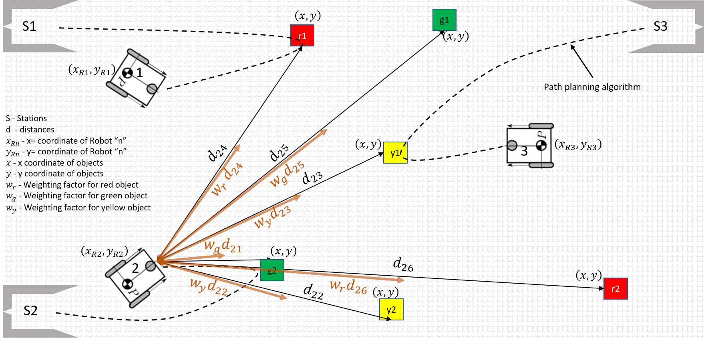

Highlights
- Built a mobile-robot-assisted priority-based sorting system combining MPC and image processing.
- Solved an online optimization over object colour, real-time distances, and weighting factors between objects and robots.
- Identified and sorted objects into pre-defined stations based on the optimization result.
Recordings
Demo video (
project01.mp4, 111 MB) exceeds GitHub's
100 MB per-file limit and is not hosted on this site yet. A compressed
version will be added shortly.
Photos
